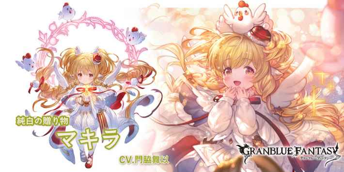

光マキラ(クリスマス)
基本資訊
| 定位 | 特殊 |
| 得意武器 | 樂器/格鬥 |
| 種族 | 哈比 |
| CV | 門脇舞以 |
立繪
上限解放前||上限解放後奧義
| 光屬性傷害(倍率4.5倍) 賦予我方全體以下效果 •4T強壯效果(30%~10%) └隨HP百分比攻擊倍率成正比上升 屏障效果(1000) |
主動技能
| 對敵方單體造成光屬性3倍傷害 賦予敵方單體光慧效果(無法消除) └1.攻擊力-10% └2.累計受到1224W光屬性技能傷害時，額外附加122.4W無屬性傷害並驅散1個強化效果 #隨著使用次數增加攻擊次數(上限5次) |
|
| 對敵方全體造成光屬性3倍傷害 賦予敵方全體180秒以下效果 •暗屬性攻擊力-15% •光屬性防禦力-25% #第2次使用時，追加DA率-50%和TA率-50% #第3次使用時，追加slow效果 |
|
被動技能
|
半熟のサンタクロース |
|
聖夜の装い |